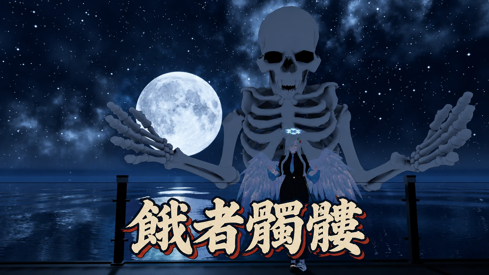

Appears behind you
The upper body of a skeleton several times your height appears about 1 m behind you. It keeps its place at your back as you walk or turn. Crouching or leaning forward doesn't change its height.
餓者髑髏
A giant skeleton that looms up behind you. Turn it on from the menu, and the upper body of a skeleton four times your size rises from the ground behind you, burning with purple flame. It moves with your arms, elbows, torso and head, and looks where you look. Make a fist and it clenches its own; keep both hands in fists and it opens its jaw to breathe a cloud of darkness.

Add it to your avatar and press one button to fit it to your body. That's all it takes.
The upper body of a skeleton several times your height appears about 1 m behind you. It keeps its place at your back as you walk or turn. Crouching or leaning forward doesn't change its height.
It takes about 3.6 seconds to appear, as a burning purple edge builds the bones from the bottom up. When you turn it off, it burns away from the top down over about 3.2 seconds. The burning edge glows even in the dark.
The position of both hands and the direction of your elbows are mirrored onto the skeleton, scaled to its size (powered by Final IK).
With full-body tracking, the twist and tilt of your spine and chest are copied over at about half strength, so the skeleton's ribcage doesn't block your view when you bend forward. With 3-point tracking or on desktop, the torso stays still so it doesn't jitter. The head looks at the same point you do: 2 m straight ahead of your head.
The skeleton's fingers bend to match 8 hand gestures, including fist, open hand, point and peace sign. The fist closes as you squeeze the trigger.
Hold both hands in fists for 1.5 seconds, and the skeleton opens its jaw and breathes a cloud of black miasma about 8 m ahead. Streaks of violet-white light run through the cloud, and pink-violet sparks and ash drift in it. Open either hand to stop.
A purple flame burns constantly at the torn lower end of the spine. Tinged with blue-violet and pink-violet, it tears apart as it rises.
A single "Gashadokuro" toggle is added to your VRChat menu. Its on/off state is saved.
The fingers and the breath are driven by hand gestures, which VRChat already syncs, so other players see them as they are.
The skeleton model was made originally for this product.
Install the prerequisites, place the prefab, and press one button to fit it to your avatar.
Install the following beforehand:
The Stub contains only the parts needed to upload. It works in VRChat, but the skeleton's arms won't move in the Unity Editor.
Drag and drop the "Gashadokuro" prefab directly under the top level of your avatar (the avatar root).
Leave its position, rotation and scale at their defaults.
Select the placed "Gashadokuro" in the Hierarchy and press the Fit To Avatar button in the "Gashadokuro Fitter" component in the Inspector (running Tools > Nunifuchisaka > Gashadokuro > Fit To Avatar from the menu does the same). This matches the skeleton's arm length, shoulder position and palm direction to your avatar's build.
It also sets the skeleton's size automatically from your avatar's shoulder height (the Scale of Big, between 1.5 and 4). Even on a small avatar, there's no need to resize it by hand.
Without this step, the skeleton's torso twists and its arms bend.
If the button is disabled and a message (in Japanese) asks you to place it directly under a Humanoid avatar root, Gashadokuro isn't directly under your avatar root.
Once placed, the skeleton is shown in the Scene view in its risen pose. After fitting, it's shown at the chosen size, so you can check its height next to your avatar. This is an editor-only preview and doesn't affect the Game view or the uploaded avatar.
Upload the avatar as usual.
Turn "Gashadokuro" on in the menu to make it appear, and off to make it disappear.
The skeleton's jaw stays closed normally. Hold both hands in fists for 1.5 seconds, and it opens its jaw to breathe. Open either hand to stop.
These are the values you can change inside the prefab. Leave the position, rotation and scale of the prefab root (Gashadokuro) as they are, and adjust its child Big or the materials instead.
Adjust the Transform of Gashadokuro/Big under your avatar.
| Field | Default | Description |
|---|---|---|
| Scale | 4 (set by Fit from shoulder height) | Scale factor. Fit To Avatar sets it between 1.5 and 4 from your avatar's shoulder height. Because of the burning edge of the appear/disappear effect (Dissolve), the fingertips get cut off when the arms are raised straight up at scales above 4. Don't set it above 4 |
| Position | (0, 0.4, −1.0) × Scale ÷ 4 | Position relative to you. Fit To Avatar sets it to match the Scale. Lower z moves it farther away; y sets the height |
Changing the size by hand after Fit (Fit sets the Scale automatically from shoulder height; only do this if that isn't what you want)
1. In the Hierarchy, select Big inside Gashadokuro.
2. In the Inspector, change the three Scale values (X, Y, Z) together to the same number (for example, 2.5 to make it smaller).
3. If the height or distance looks off, change the Y and Z of Position by the same ratio. Setting it to (0, 0.4, −1.0) × new Scale ÷ 4 gives the same placement Fit would (for Scale 2.5: (0, 0.25, −0.625)).
The Scale and Position that Fit decided are kept in the Inspector of Gashadokuro (Gashadokuro Fitter), in the rows labeled "髑髏の大きさ" (skeleton size) and "位置" (position). If you change them after Fit, the current values are shown there as a notice.
Notes: running Fit To Avatar again resets the Scale and Position you changed to the values derived from shoulder height (the arm matching doesn't depend on Scale, so you don't need to run Fit again after resizing). Don't set Scale above 4 (with the arms raised straight up, the fingertips get cut off at the burning edge of the appear/disappear effect). A smaller Scale also shortens the breath's reach proportionally (about 8 m at Scale 4; about 4 m at Scale 2). The skeleton's gaze distance (about 2 m) and the width of the burning band do not shrink, so the smaller you go, the thicker the burning band looks relative to the skeleton, and the appear/disappear flames pass over it more quickly.
Adjust the properties of Material/Gashadokuro.mat.
| Property | Default | Description |
|---|---|---|
| _Color | White | Color adjustment (multiplied onto the base color texture) |
Please check these before you install.
On Quest (Android), Final IK doesn't run due to VRChat's specifications, so the skeleton isn't shown.
If you also upload the same avatar for Quest (Android), remove this gimmick from the Android version (in the Android project, delete the prefab or set it to EditorOnly).
Final IK is integrated into VRChat in its own way and isn't officially supported. Its behavior may change with future VRChat updates.
Grabbing an object with both hands turns them into fists, so holding on for 1.5 seconds or more triggers the breath.
There's no collision with walls or ceilings. In small worlds, the skeleton clips into them.
When you swing your arms quickly, the skeleton's hands lag slightly behind.
When you lower your arms straight down, the skeleton's fingertips go below the floor.
The skeleton's arms never fully straighten. Even when you fully extend your arms, its elbows stay slightly bent (this keeps the elbows from jittering at full extension).
The head turns toward a point 2 m straight ahead of your head. Looking sideways with only your eyes (eye tracking) isn't copied.
The fingers only follow the 8 gesture poses. Individual finger movements aren't copied.
The spine flame is drawn additively, so in worlds with strong bloom, its core glows over a wide area. Players who have shaders hidden won't see the flame.
The Bounds (size) become about 15 m on each side, so this gimmick alone makes your avatar's Performance Rank Very Poor. This is counted even while the skeleton is hidden.
The increase measured on Liloumois with the VRChat SDK's performance stats (PC, after Modular Avatar processing):
Avatars, outfits and other items shown in the product images are not included.